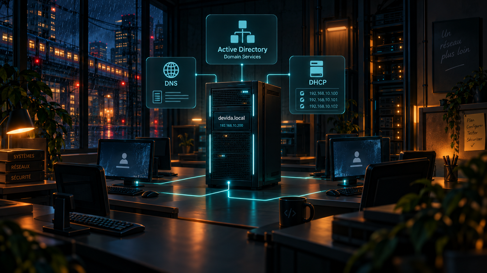

En clair
Qu'est-ce que c'est ?
Le contrôleur de domaine principal est le serveur central qui organise les utilisateurs, les ordinateurs et les droits d'accès du domaine devida.local.
Analogie simple : On peut le comparer à l'accueil et au service de sécurité d'une entreprise : il vérifie qui se connecte et donne accès aux bonnes ressources.
Utilité
À quoi ça sert ?
- Centraliser les comptes utilisateurs et les ordinateurs.
- Permettre l'authentification sur le domaine devida.local.
- Fournir les services DNS et DHCP utilisés par l'infrastructure.
DEVIDA
Ce que j'ai mis en place
- Windows Server 2022 configuré comme contrôleur de domaine principal.
- Active Directory Domain Services (AD DS), DNS et DHCP mis en place.
- Adresse IP indiquée dans le projet : 192.168.10.200.
- Infrastructure exécutée sous VMware Workstation.
Vocabulaire
Les mots techniques expliqués simplement
AD DS
Service Windows Server qui gère le domaine, les comptes et les ordinateurs.
Service Windows Server qui gère le domaine, les comptes et les ordinateurs.
DNS
Service qui traduit les noms de machines et de services en adresses IP.
Service qui traduit les noms de machines et de services en adresses IP.
DHCP
Service qui peut attribuer automatiquement les paramètres réseau aux postes.
Service qui peut attribuer automatiquement les paramètres réseau aux postes.
Domaine
Ensemble centralisé d'utilisateurs, de postes et de règles administrés ensemble.
Ensemble centralisé d'utilisateurs, de postes et de règles administrés ensemble.